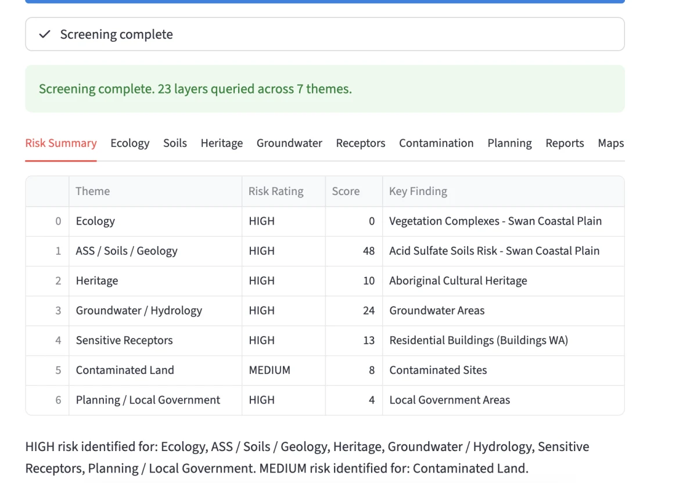

WA Environmental Screening Tool
I developed this tool to explore how environmental constraints can be identified more efficiently during the early assessment of a site. It brings together more than 20 Western Australian government spatial datasets covering wetlands, acid sulfate soils, groundwater, contaminated sites, heritage, sensitive receptors and other environmental considerations. The project combines environmental assessment, GIS and Python to produce an initial picture of potential constraints that may require further investigation.
Explore project